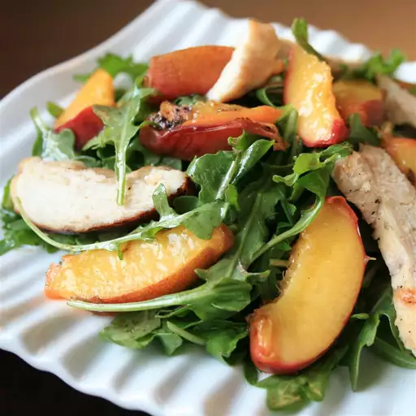

Grilled Chicken, Peach, and Arugula Salad

Description:
A yummy summer salad with grilled chicken and grilled fresh peaches.
Ingredients:
- olive oil
- balsamic vinegar
- chopped shallot
- Dijon mustard
- peaches, halved and pitted
Steps:
- Preheat an outdoor grill for medium-high heat and lightly oil the grate.
- For the dressing: Whisk 4 tablespoons olive oil, balsamic vinegar, shallot, Dijon mustard, and 1/2 teaspoon
salt together in a bowl until well mixed.
- Brush 1 teaspoon olive oil onto cut-side of peaches.
- Place peaches, cut-side down, onto grill and cook until heated through, about 4 minutes. Transfer peaches to
a plate.
- Brush remaining oil onto both sides of chicken breasts and season with salt.
- Cook chicken on the preheated grill until no longer pink in the center, about 4 minutes per side. An
instant-read thermometer inserted into the center should read at least 165 degrees F (74 degrees C). Slice
chicken into thin pieces and cut peaches into 1/2-inch thick pieces.
- Toss arugula and dressing together in a bowl. Divide dressed arugula among plates; top with peaches and
chicken.